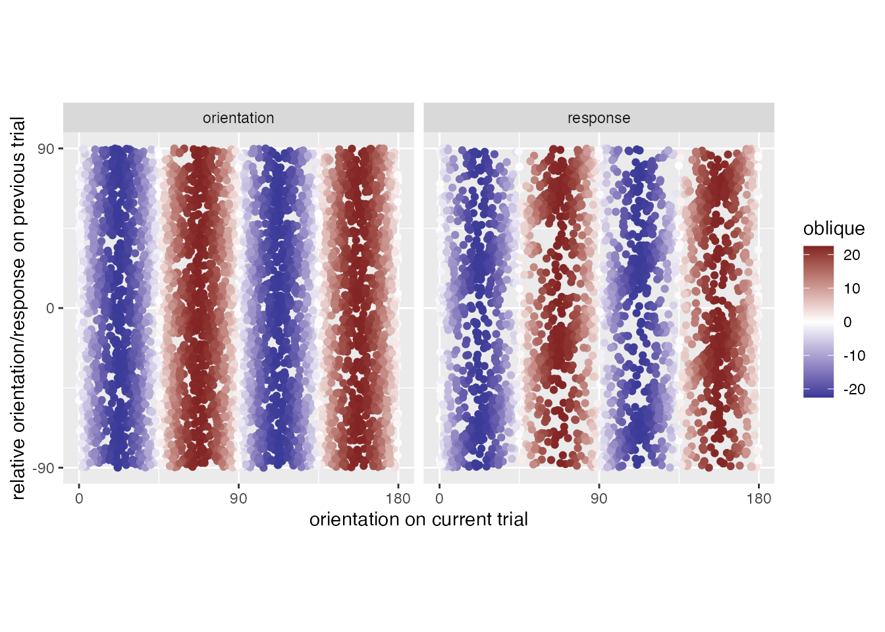
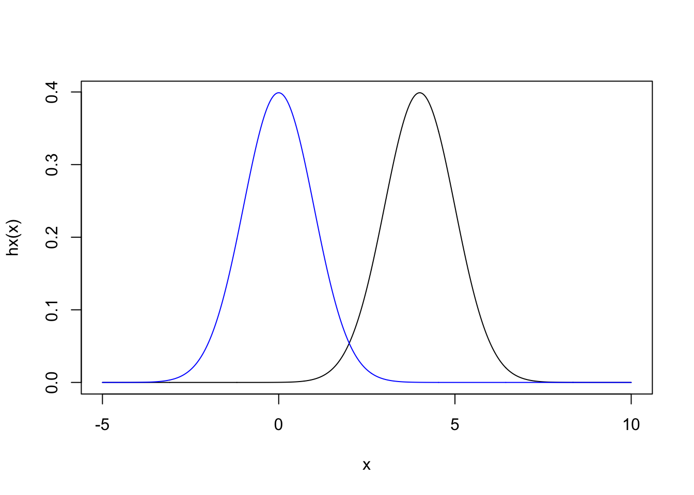

psadil
Publications
Blog
Categories
All
(20)
comps
(1)
dissertation
(8)
experiments
(4)
gist
(2)
research
(1)
Blog
Hinting Cache Decorator Types
gist
Recently, I encountered a python function that I didn’t want to modify, but whose output I wanted cached. Providing typehints for this seemed a bit complicated, so I’m…
Oct 23, 2022
Patrick Sadil
How to store a NifTi as a TFRecord
gist
A recent project required sending brain images to TensorFlow. Unfortunately, the data exceeded memory and so during training would need to be read from the disk. Poking…
Apr 23, 2022
Patrick Sadil

Spurious Serial Dependencies
research
I’m working on a project involving serial dependence. The project involves disentangling a dependence on the previous orientation from a dependence on the previous response.…
May 7, 2021
Patrick Sadil
New England GAN
A friend recently moved away from Western Mass, so I wanted to send them a gift to help remind them of the area. I also happened to want to learn a bit more about Generative…
Jan 17, 2021
Patrick Sadil
counterbalanced continuous designs with eulerian walks
experiments
Many experiments require counterbalancing sequences of trials. For example, I’m currently running an experiment on serial dependence
1
. In my experiment, participants report…
Mar 14, 2020
Patrick Sadil
thoughts on eye movement
Visual perception research has produced many illusions. Stare at a waterfall for a minute, then look away and the whole world appears in motion, traveling upwards
(Addams 1834…
Nov 21, 2019
Patrick Sadil
Half of a parameter
dissertation
Science produces models that provide parsimonious descriptions of the world. In cognitive psychology, models regularly compete to explain a few phenomena. But models can…
Nov 15, 2019
Patrick Sadil
Staircases for Thresholds, Part 2
dissertation
In last week’s post, I discussed how some experiments in cognitive psychology require researchers to pick a differently intense stimulus for each participant. In particular…
Nov 8, 2019
Patrick Sadil
Staircases for Thresholds
dissertation
Performing any experiment on cognition requires deciding which stimuli to use. Some experiments require participants to make many errors, requiring the stimuli to be…
Oct 30, 2019
Patrick Sadil
Forward encoding model
Functional magnetic resonance imaging records brain activity with spatially distinct voxels, but this segmentation will be misaligned with a brain’s meaningful boundaries.…
Oct 24, 2019
Patrick Sadil
Modulations to tuning functions can bias evidence accumulation
dissertation
Perceptual decisions can be deconstructed with evidence accumulation models. These models formalize expectations about how participants behave, when that behavior involves…
Oct 18, 2019
Patrick Sadil
serial dependence reflects a preference for low variability
dissertation
One framework for understanding perception casts it as inference: just as a statistician uncovers noisy data to uncover patterns, an organism perceives when it converts…
Oct 11, 2019
Patrick Sadil
derivative of gaussian for serial dependence
dissertation
Cognitive experiments can require participants to complete hundreds of trials, but completing so many trials invariably alters participants’ behavior. Their behavior late in…
Oct 3, 2019
Patrick Sadil
an overview of population receptive field mapping
dissertation
Perceiving the world requires representing the world in neural tissue. A neuron is
tuned
to perceivable information when different values of that information cause the…
Sep 27, 2019
Patrick Sadil
Serial Dependence
dissertation
Objects in the visual environment move suddenly and erratically, and visual perception must be sensitive to the changes that are important. But each saccade and head tilt…
Sep 19, 2019
Patrick Sadil
Circular Diffusion Model of Response Times
Many cognitive experiments involve asking participants to answer questions that require circular responses (Figure 1). What was the color of the shape you just saw? In which…
Sep 12, 2019
Patrick Sadil
eyetracking with eyelink in psychtoolbox, now with oop
experiments
I’ve started trying out MATLAB’s OOP after mounting suspicion that the way I’d been coding experiments basically involved making something that looked and behaved like an…
May 25, 2019
Patrick Sadil

Basic Importance Sampling for Variance Reduction
comps
This post attempts to provide a brief intro to importance sampling, presenting a relatively simple situation in which importance sampling enables a speedup in Monte Carlo by…
Nov 10, 2018
Patrick Sadil
Anonymizing MTurk WorkerIDs
experiments
It may be the case that Amazon Mechanical Turk WorkerIDs are not anonymous. Lease et al., 2013 describe at length how personally identifying information may be exposed when…
Aug 7, 2018
Patrick Sadil
eyetracking with eyelink in psychtoolbox
experiments
UPDATE: I now think that the examples I’ve presented here obscure the interface with Eyelink. Much cleaner to use MATLAB’s object oriented programming. This is covered in ano…
Jun 5, 2018
Patrick Sadil
No matching items